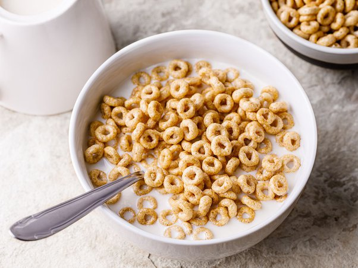

Cereal

Cereal can be a nutritious meal to start the day, and it is very easy to make.
during my time at university, cereal was more than just a breakfast snack - it was also
an anytime snack! Morning, mid-day, dinner, midnight snack - you name it! Today I am going to
share with you a recipe to create a a bowl of cereal. Althought simple, there are rules to the
to the art of cereal.
Ingredients
- Your favorite cereal. Examples include:
- Fruity Pebbles and Coco Pebbles my favorites!
- Cheerios
- Fruit Loops
- Cinnamon Toast Crunch
- your preferred choice of milk I prefer whole milk, but any milk will do.
- favorite bowl Your bowl should be deep enough to hold a cup's worth of milk and cereal.
Procedure
- Pour your cereal into your bowl.
- Pour your milk into your bowl. Quick Tip: Once you see the cereal start to float due to the milk, STOP POURING!
- YOU'RE DONE! ENJOY!